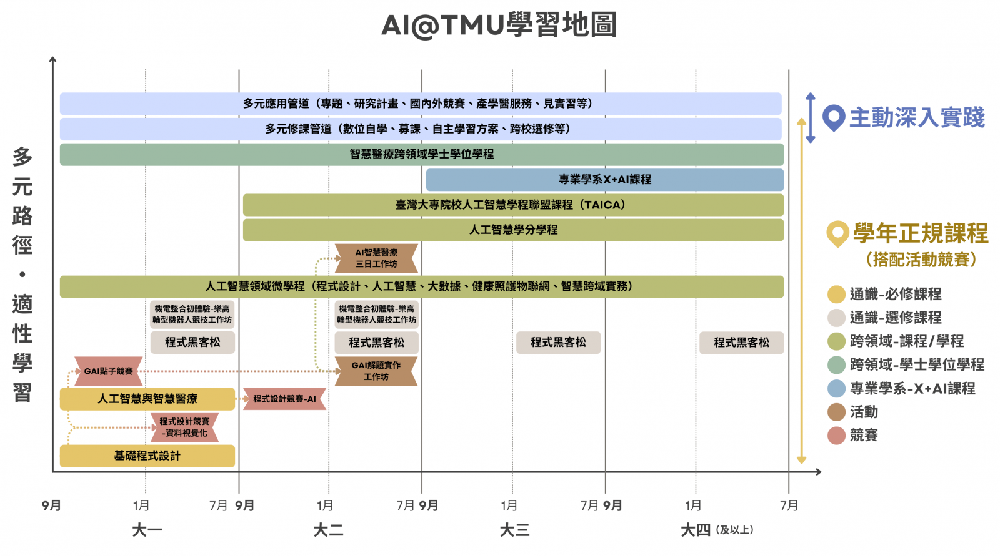

跨域整合
結合醫學知識、人工智慧技術與程式設計能力，理解健康資料的應用情境。
智慧生醫教育在北醫
跨領域學院整合跨領域課程、人工智慧領域微學程、校內外活動與競賽資訊，協助北醫人從程式設計、跨域思維到智慧醫療應用，建立能解決真實世界問題並落地應用的學習路徑。

關於 AI @ TMU
我們把醫療專業、資料、場域問題與人工智慧技術放進同一張學習地圖中，讓不同學習背景的學生能找到合適的出發點，逐步累積智慧醫療跨域合作所需的語言與能力。
學習焦點
結合醫學知識、人工智慧技術與程式設計能力，理解健康資料的應用情境。
關注資料收集、清理、演算法選擇與模型建構，讓 AI 能落到可驗證的問題上。
把技術應用到數位醫療、精準醫療與智慧醫療，並重視資料倫理、 AI 倫理與實務限制。
學課程
xxxxxxx
xxxxxxx
TAICA 聯盟
本校為教育部「臺灣大專院校人工智慧學程聯盟」成員，學生可選修聯盟課程並取得學分與學程。
完整課程資訊與開課時程請以教務單位公告為準。
活動快訊